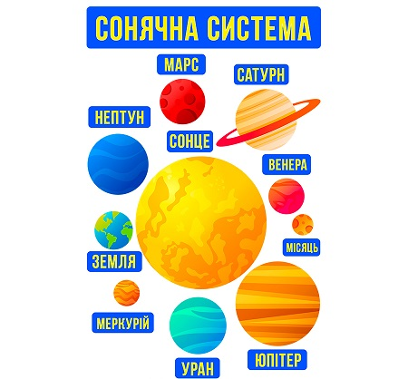

Сонячна система
Планетна система, що включає в себе центральну зорю — Сонце, та всі природні космічні об'єкти (планети, астероїди, комети, потоки сонячного вітру тощо), які об'єднуються гравітаційною взаємодією.
Сонячна система є частиною значно більшого комплексу, який складається із зірок та міжзоряної речовини — галактики Чумацький Шлях.
Планети за фізичними характеристиками поділяють на дві групи.
Ближче до Сонця розташовані планети земної групи: Меркурій, Венера, Земля, Марс; далі від Сонця розташувались планети-гіганти: Юпітер, Сатурн, Уран, Нептун.
Окрім Сонця й планет, до складу Сонячної системи входять також карликові планети, супутники планет, астероїди, комети, метеорна речовина.
Загальний опис
Сонячна система складається з гравітаційно пов'язаних небесних тіл: масивного центрального тіла — Сонця — та численних об'єктів, що обертаються навколо нього. Це вісім великих планет (Меркурій, Венера, Земля, Марс, Юпітер, Сатурн, Уран, Нептун), понад 100 їхніх супутників, пояс астероїдів та пояс Койпера, комети, метеороїди та космічний пил. Пояс Койпера, який містить близько 70—100 тис. об'єктів діаметром понад 100 км, виявлено у 1992—2000 рр. завдальшки 30—50 а. о. від Сонця. До нього належить, зокрема, Плутон, який 26-та Генеральна асамблея Міжнародного астрономічного союзу 2006 року перекласифікувала з планети на карликову планету.
Головна роль у Сонячній системі належить Сонцю. Його маса приблизно в 750 разів перевищує масу всіх інших тіл, що входять до системи. Гравітаційне тяжіння Сонця є визначальною силою для руху всіх тіл Сонячної системи. Середня відстань від Сонця до найдальшої від нього планети Нептун становить 30 а. о., тобто 4,5 млрд км, що дуже мало в порівнянні з відстанями до найближчих зір. Тільки деякі комети віддаляються від Сонця на 1015 а. о. та можуть відчувати істотний вплив тяжіння інших зір.
Сонячна система входить до складу Чумацького Шляху. Під час руху в Галактиці Сонячна система час від часу потрапляє до міжзоряних газопилових хмар. Внаслідок високої розрідженості речовини цих хмар занурення Сонячної системи в хмару може виявитися лише в невеликому поглинанні й розсіюванні сонячних променів. Вплив цього ефекту в історії Землі наразі не встановлений.
Сонце
Сонце — єдина зоря Сонячної системи та її головна складова. Його маса (332 900 мас Землі) досить велика для підтримання термоядерних реакцій синтезу в його надрах, внаслідок яких вивільняється велика кількість енергії, що випромінюється в простір здебільшого у вигляді електромагнітного випромінювання, максимум якого припадає на діапазон хвиль довжиною 400—700 нм, який відповідає видимому світлу.
Планети
- Меркурій
- Венера
- Земля
- Марс
- Юпітер
- Сатурн
- Уран
- Нептун
Внутрішня частина Сонячної системи
- Меркурій
- Венера
- Земля
- Марс
- Пояс астероїдів
- Церера
Зовнішня частина Сонячної системи
- Юпітер
- Сатурн
- Уран
- Нептун
- Все решта
- Комети
- Кентаври
- Транснептунові об'єкти
- Пояс Койпера
- Плутон
- Дев'ята планета
- Гаумеа
- Макемаке
- Розсіяний диск
- Ерида
Віддалені області
- Геліосфера
- Хмара Оорта
- Седна